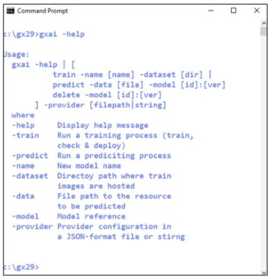
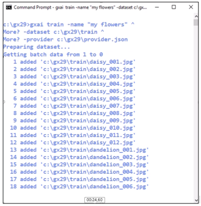
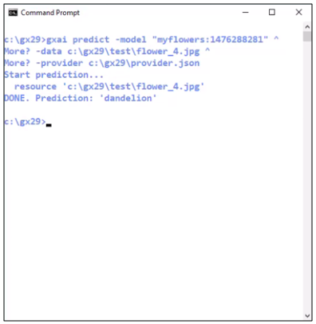

Sample: GeneXusAI Custom-Models proof of concept
This article refers to the proof of concept made during the GeneXus Meeting #29 conference about GeneXusAI.
Sample download
 Sample - GeneXusAI PoC - Custom Model.
Sample - GeneXusAI PoC - Custom Model.
GeneXusAI built-in module installation
1. Go to Knowledge Base option from the GeneXus Toolbar.
2. Click on Manage Module References.
3. Look for GeneXusAI module on the displayed list.
4. Click on the "Install" button.
You could see the installation process on the 'General' option of the output section. Once installed, you can import the GeneXusAI_Sample.xpz file using the Knowledge Manager Import.
Sample content
The Knowledge Base includes:
- gxai procedure
A command-line procedure that implements a utility for training a custom model, predict an output based on a new (unseen) input and delete the model.
- GenerateDataset
A procedure to generate the dataset by scanning the content of a directory.
Runtime execution
The application is a simple command-line tool for training a custom model and predict based on it by using with GeneXusAI. For sampling purposes, we had used a subsample of Flowers dataset (you can download here: FlowersDatasetSubsample.zip).
|  | agxai -help Displays a message explaining how to use the command-line utility. The command has three option: > help: Display the message > train: For training a custom model > predict: For predicting an output based on a new (unseen) input. > delete: For deleting a custom model previously created/trained. |
|  | agxai train -name "{your_model_name}" - dataset {dataset_dir} -provider {provider_file} Creates a new custom model, starts the training process and check for the status until it is ready (or aborted). |
|  | agxai predict -model {model_id} -data {input_file} -provider {provider_file} Given a new input (image) returns a prediction label for the custom model previously trained. |
| - | agxai delete -model {model_id} -provider {provider_file} Deletes a custom model previously trained. |
See also
| Backlinks |
| Toc:GeneXus Artificial Intelligence |